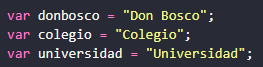

1. Utilizar === en lugar de ==
Se recomienda utilizar el operador de igual === en lugar de ==, ya que, se considera la mejor practica a la hora de comparar.
2. Utilizar JS Lint
Este depurador nos ayudara a escanear nuestro código y buscara problemas o errores que podamos tener.

3. Declarar variables fuera de la sentencia For
La forma incorrecta de declarar variables para una sentencia es hacerlo dentro de esta, por ejemplo:
La forma correcta de realizar esta acción es hacerla fuera de la sentencia, de esta forma:
4. Comentar el código
Se recomienda comentar el código, ya que, cuando quieres volver a trabajar en tu proyecto meses después, estos te ayudan a recordar fácilmente o cuando compartes tu código a un compañero, este puede entender muy fácil lo que estamos realizando.
5. Colocar los scripts que utilizamos en la parte inferior de la pagina
Si no colocamos los scripts en la parte inferior de la página esta nos dará problemas y complicará nuestro trabajo.
6. Evita la lista larga de variables
La forma incorrecta de declarar muchas variables es realizar cada una mediante la palabra clave “Var”, por ejemplo:
La forma correcta de realizar la declaración de variables es utilizar comas, de esta forma:
7. Utilizar siempre punto y coma
Muchos navegadores te permitirán omitir el punto y coma:
Pero esto puede dar muchos problemas y difíciles de encontrar al momento de intentar corregirlos, se recomienda + utilizar siempre punto y coma para evitar la mayoría de errores, de esta manera:
8. Utilizar {} en lugar de New Object()
En la creación de un nuevo objeto usamos el New Object(), de esta manera:
La mejor manera de hacer este nuevo objeto es de la siguiente forma:
9. Utilizar [] en lugar de New Array()
De la misma manera que el anterior practica muchas personas crean un nuevo array de esta manera:
Pero la mejor forma de realizar esta creación de un nuevo array es:
10. Funciones Autoejecutables
Podemos realizar una funcion que se autoejecute con solo recargar nuestra pagina, en lugar de llamar a una, de esta forma: